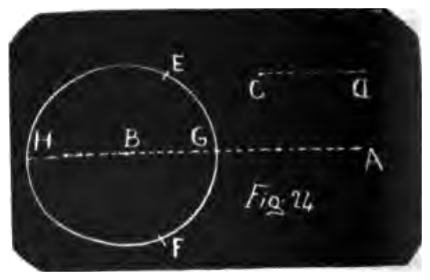
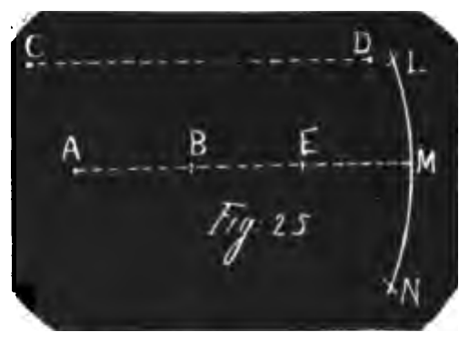

§§ 71–75: Addizione e sottrazione delle distanze in linea retta¶
LIBRO QUARTO
DELL’ADDIZIONE E SOTTRAZIONE DELLE DISTANZE; DELLA SITUAZIONE DELLE PERPENDICOLARI E DELLE PARALLELE
71. L’aggiungere, o togliere una distanza da un’altra data, che è così semplice e facile a farsi col compasso e colla riga, tirando una retta indefinita pei due estremi della prima distanza, e sopra essa aggiungendo, o togliendo la seconda distanza col compasso (3, lib. I) non è certo così pronta cosa, e spedita a farla col solo compasso; nè qui si propongono questi Problemi come di grande uso; ma solo perchè si vegga non poter esserci alcun Problema della Geometria Elementare, che non si possa anche sciogliere col compasso solo nel senso spiegato (§ I), il che si dimostrerà poi più rigorosamente a suo luogo, e perchè non manchi alcuno degli Elementi di questa nuova Geometria giusta la promessa (§ 7).
72. Prob. Dalla distanza \(AB\) togliere una distanza eguale a \(CD\) (fig. 24).


Sol. Col raggio \(CD\), e col centro \(B\) (se la distanza si vuol togliere da quella parte) si descriva un cerchio \(FGEH\). Col centro \(A\), e con qualche raggio si descriva un arco, che tagli il cerchio in \(E\) ed \(F\). Si divida in due l’arco \(EGF\) (§ 60) in \(G\). sarà il punto \(G\) sulla retta \(BA\), e sarà \(GA\) il residuo.
Dim. Avendo i due triangoli \(EBG, FBG\) i lati eguali; sarà
f. 0066 · p. 41l’angolo \(EBG = FBG\) (8, lib. I). Sarà dunque l’angolo \(EBG\) eguale alla metà dell’angolo \(EBF\). Avendo pure i lati eguali tra loro i due triangoli \(EBA, FBA\); si proverà nella stessa maniera, che anche l’angolo \(EBA\) è la metà dell’angolo \(EBF\). Dunque l’angolo \(EBG\) è eguale ad \(EBA\). Dunque il punto \(G\) è sulla \(BA\). Ma è anche \(BG\) eguale alla \(CD\). Dunque \(GA\) sarà il residuo della \(AB\) toltane la \(CD\).
73. Prob. Alla distanza \(AB\) aggiungere la distanza \(CD\) in linea retta (fig. 24).
Sol. Col centro \(B\) (se l’aggiunta si vuol fare da quella parte), e col raggio \(CD\) si descriva il cerchio \(FGEH\). Col centro \(A\), e con qualche raggio si descriva un arco, che tagli il cerchio in \(E\) ed \(F\). Si divida in due l’arco \(EHF\) in \(H\) (§ 60). Sarà il punto \(H\) sulla retta \(AB\); e sarà \(AH\) la somma delle due distanze \(AB, CD\).
Dim. Per l’eguaglianza de’ lati tra loro ne’ due triangoli \(EBH, FBH\), così pure ne’ due triangoli \(EBA, FBA\) si troverà (8, lib. I) l’angolo \(EBH = FBH\), e l’angolo \(EBA = FBA\). Dunque \(EBH + EBA = FBH + FBA\). Ma la somma di tutti questi quattro angoli è eguale a quattro retti (13, lib. I). Dunque la loro metà, per esempio \(EBH + EBA\), sarà eguale a due retti, e quindi la \(HBA\) sarà una retta (14, lib. I). È poi \(BH = CD\). Dunque \(AH = AB + CD\).
74. Prob. Sulla \(AB\) da \(A\) verso \(B\) collocare la \(CD\) maggiore della \(AB\) (fig. 25).


Sol. Col centro \(A\), e col raggio \(CD\) si descriva un arco indefinito \(LMN\), ovvero un cerchio intero. Col centro \(B\), e con raggio arbitrario si descriva un arco, che tagli il primo ne’ due punti \(L\) ed \(N\). Si divida in due parti eguali l’arco \(LN\) (§ 60) in \(M\). Sarà la \(AM\) la stessa \(CD\) posta a quel luogo, che che si voleva.
Dim. Col metodo delle dimostrazioni de’ due Problemi precedenti (§§ 72 e 73) si troverà, che essendo l’angolo \(LMA = NMA\) (8, lib. I) \(= \frac{1}{2} LMN\); così pure \(LMB = NMB = \frac{1}{2} LMN\);
f. 0067 · p. 42sarà \(LMA = LMB\), e quindi \(ABM\) retta. È poi anche eguale a \(CD\). Dunque ecc.
75. Avv. Se l’arco descritto col centro \(B\) tagliasse ad angoli troppo acuti l’arco descritto col centro \(A\); il che succede, quando \(AB\) è troppo piccola per rapporto a \(CD\); alla \(BA\) si aggiunga l’eguale \(AE\) in linea retta, e l’arco \(LMN\) descritto col centro \(A\) si tagli con un arco descritto col centro \(E\) in \(L\) ed \(N\). Se anche in tal caso gli angoli de’ due archi riuscissero troppo acuti; si triplichi, si quadruplichi, ecc. (§ 65) la retta \(AB\) da \(A\) verso \(B\), fino a che l’ultimo suo punto preso per centro del secondo arco dia gli angoli d’intersezione in \(L\) ed \(N\) più vicini all’angolo retto. Si faccia lo stesso in casi simili pei §§ 72 e 73.